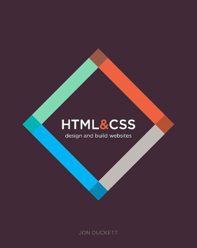
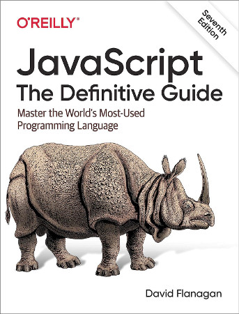

Reference Books for Programming
I would like to share some of the books I use for reference.
HTML and CSS: Design and Build Websites

Every day, more and more people want to learn some HTML and CSS. Joining the professional web designers and programmers are new audiences who need to know a little bit of code at work (update a content management system or e-commerce store) and those who want to make their personal blogs more attractive. Many books teaching HTML and CSS are dry and only written for those who want to become programmers, which is why this book takes an entirely new approach.
Responsive Web Design with HTML5 and CSS

Responsive Web Design with HTML5 and CSS, Fourth Edition, is a fully revamped and extended version of one of the most comprehensive and bestselling books on the latest HTML5 and CSS techniques for responsive web design. It emphasizes pragmatic application, teaching you the approaches needed to build most real-life websites, with downloadable examples in every chapter.
JavaScript: The Definitive Guide

This book is for programmers who want to learn JavaScript and for web developers who want to take their understanding and mastery to the next level. It begins by explaining the JavaScript language itself, in detail, from the bottom up. It then builds on that foundation to cover the web platform and Node.js.